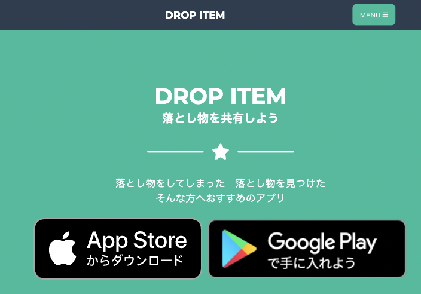
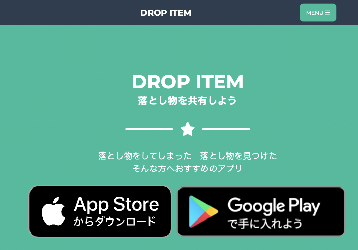
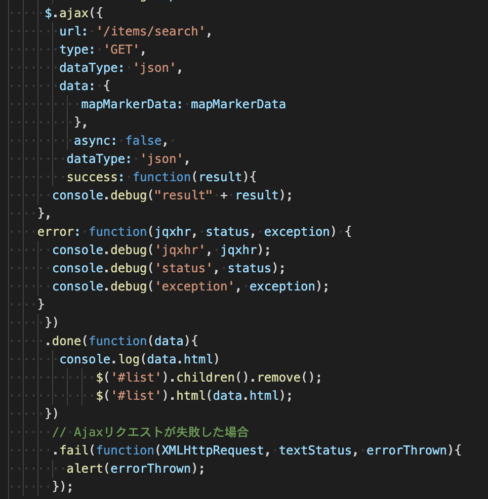

DropItem
 

開発環境
Ruby / Ruby on Rails / MySQL / GitHub / Heroku / Visual Studio Code
-
概要
制作時間 80時間 URL https://drop-item.herokuapp.com/ -
動作テスト
取得テスト用アカウント
mail aa@aa PASS aaaaa1
OUTLINEアプリケーションの概要
オリジナルアプリケーションとして、落とし物をした人や発見した人のために開発しました、
落とし物情報共有アプリになります。
主な機能は、ユーザー管理機能、落とし物情報管理機能、マップ機能になります
トップページにアクセスすると、新着の落とし物情報と、ヘッダーにアカウント機能、右下にマップ機能と落とし物情報登録機能へのアクセスボタンがあります。
落とし物情報登録機能に飛ぶと、画像、名前、場所に加え、Googleマップを利用しての位置情報を登録することができます。
マップ機能では登録されている落とし物情報をGoogleマップで一覧で確認することができます。
また落とし物を取得した場合、位置情報の削除と取得ずみといったアイコンが表示されるようになっています。
-
開発に至った経緯
昔、Ipodを無くした際に１日中外にいた日でどこに落としたかわからない時があり、探しに行くにしても候補がたくさんあり、警察に届け出するにも落とした場所がわからない時があり困りました。
そんな時に落とし物の情報をまとめているアプリがあったらいいなと思っていたため、今回実装しました。
-
開発で工夫したこと
非同期処理で部分テンプレートを更新することです。
マップ内に表示されているマーカーをリストにしたいと考えた際、コントローラーを介した際に帰ってくる変数を利用したeach文、もしくはfor文を想定していたのだが処理がうまくいかず大変でした。
そのため帰ってくる値をHTML形式に指定し、帰ってきたHTMLを部分テンプレートに投げることで非同期処理での更新に成功しました。 -
今後実装したいと思っていること
１つ目が依頼機能です。
どこどこに何々を落としたので見つけたら連絡くださいといった機能を追加したいと思っています。 依頼機能があることで利便性がより上がり、双方向の使い方ができると考えるからです。
２つ目がポイント機能です。
自身が投稿した落とし物に対して取得されたら、ポイントを加算していき、 ランクや何かのポイントなどへの交換機能などを実装したいです。 そうすることでより活発なアプリ利用が促されると考えるからです。